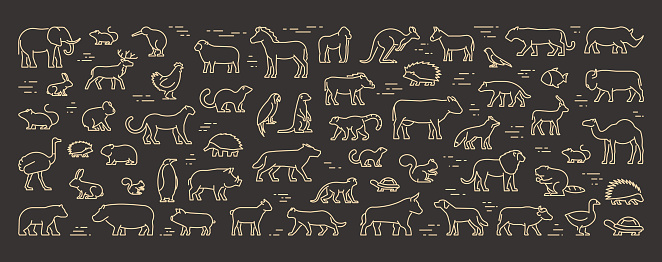

Animales terrestres
En biología, se habla de animales terrestres para referirse a aquellos animales que hacen vida preferente o enteramente sobre la tierra, es decir, en la superficie continental del planeta, a diferencia de los animales acuáticos, que habitan mayormente en el agua. Los animales terrestres se encuentran física y orgánicamente adaptados a la vida lejos del agua.
En los inicios del planeta, la vida comenzó en el agua, y se extendió a la superficie terrestre hace unos 500 millones de años aproximadamente, cuando las primeras plantas vasculares abandonaron el agua. Las primeras formas animales le siguieron alrededor de 70 millones de años después, consistiendo en su mayoría en artrópodos y en vertebrados óseos.
Biografias de animales terrestres
Elefante

Leon

Gato